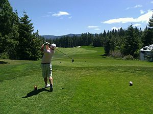

Golf
| 
A golfer in the finishing position after hitting a tee shot
|
|
| Highest governing body | R&A USGA International Golf Federation |
|---|---|
| First played | 15th century, Scotland |
| Characteristics | |
| Contact | No |
| Type | Outdoor |
| Equipment | Golf clubs, golf balls, and others |
| Presence | |
| Olympic | 1900, 1904, 2016,[1] 2020[2] |
{kind=link}
Golf is a club and ball sport in which players use various clubs to hit balls into a series of holes on a course in as few strokes as possible.
Golf is one of the few ball games that do not require a standardized playing area. The game is played on a course with an arranged progression of either nine or 18 holes. Each hole on the course must contain a tee box to start from, and a putting green containing the actual cup. There are other standard forms of terrain in between, such as the fairway, rough, and hazards, but each hole on a course is unique in its specific layout and arrangement.
Golf is played for the lowest number of strokes by an individual, known as stroke play, or the lowest score on the most individual holes in a complete round by an individual or team, known as match play. Stroke play is the most commonly seen format at all levels.
Contents
[hide]Origin
{kind=link}
While the modern game of golf originated in 15th-century Scotland, the game's ancient origins are unclear and much debated. Some historians[3] trace the sport back to the Roman game of paganica, in which participants used a bent stick to hit a stuffed leather ball. One theory asserts that paganica spread throughout Europe as the Romans conquered most of the continent, during the first century BC, and eventually evolved into the modern game.[4] Others cite chuiwan ("chui" means striking and "wan" means small ball) as the progenitor, a Chinese game played between the eighth and 14th centuries.[5] A Ming Dynasty scroll dating back to 1368 entitled "The Autumn Banquet" shows a member of the Chinese Imperial court swinging what appears to be a golf club at a small ball with the aim of sinking it into a hole. The game is thought to have been introduced into Europe during the Middle Ages. Another early game that resembled modern golf was known as cambuca in England and chambot in France.[6] The Persian game chaugán is another possible ancient origin. In addition, kolven (a game involving a ball and curved bats) was played annually in Loenen, Netherlands, beginning in 1297, to commemorate the capture of the assassin of Floris V, a year earlier.
.jpg){kind=link}
The modern game originated in Scotland, where the first written record of golf is James II's banning of the game in 1457, as an unwelcome distraction to learning archery.[7] James IV lifted the ban in 1502 when he became a golfer himself, with golf clubs first recorded in 1503-1504: "For golf clubbes and balles to the King that he playit with".[8] To many golfers, the Old Course at St Andrews, a links course dating to before 1574, is considered to be a site of pilgrimage.[9] In 1764, the standard 18-hole golf course was created at St Andrews when members modified the course from 22 to 18 holes.[10] Golf is documented as being played on Musselburgh Links, East Lothian, Scotland as early as 2 March 1672, which is certified as the oldest golf course in the world by Guinness World Records.[11][12] The oldest surviving rules of golf were compiled in March 1744 for the Company of Gentlemen Golfers, later renamed The Honourable Company of Edinburgh Golfers, which was played at Leith, Scotland.[13] The world's oldest golf tournament in existence, and golf's first major, is The Open Championship, which was first played on 17 October 1860 at Prestwick Golf Club, in Ayrshire, Scotland, with Scottish golfers winning the earliest majors.[14] Two Scotsmen from Dunfermline, John Reid and Robert Lockhart, first demonstrated golf in the US by setting up a hole in an orchard in 1888, with Reid setting up America's first golf club the same year, St. Andrews Golf Club in Yonkers, New York.[15]
Golf course

A golf course consists of either 9 or 18 holes, each with a teeing ground that is set off by two markers showing the bounds of the legal tee area, fairway, rough and other hazards, and the putting green surrounded by the fringe with the pin (normally a flagstick) and cup.A golf course usually comes in variety of sizes. A golf course is completely covered with usually turf or grass.
The levels of grass are varied to increase difficulty, or to allow for putting in the case of the green. While many holes are designed with a direct line-of-sight from the teeing area to the green, some holes may bend either to the left or to the right. This is commonly called a "dogleg", in reference to a dog's knee. The hole is called a "dogleg left" if the hole angles leftwards and "dogleg right" if it bends right. Sometimes, a hole's direction may bend twice; this is called a "double dogleg".
A regular golf course consists of 18 holes, but nine-hole courses are common and can be played twice through for a full round of 18 holes.[16][17]
Early Scottish golf courses were primarily laid out on links land, soil-covered sand dunes directly inland from beaches.[18] This gave rise to the term "golf links", particularly applied to seaside courses and those built on naturally sandy soil inland.
The first 18-hole golf course in the United States was on a sheep farm in Downers Grove, Illinois, in 1892. The course is still there today.[19]
Play of the game
{kind=link}
Every round of golf is based on playing a number of holes in a given order. A "round" typically consists of 18 holes that are played in the order determined by the course layout. Each hole is played once in the round on a standard course of 18 holes; on a nine-hole course, players may play a "short game" playing each hole once, or a "full round" by playing each hole twice.
Playing a hole on a golf course is initiated by putting a ball into play by striking it with a club on the teeing ground (also called the tee box, or simply the tee). For this first shot on each hole, it is allowed but not required for the golfer to place the ball on a tee prior to striking it. A tee is a small peg that can be used to elevate the ball slightly above the ground up to a few centimetres high. Tees are commonly made of wood but may be constructed of any material, including plastic. Traditionally, golfers used mounds of sand to elevate the ball, and containers of sand were provided for the purpose. A few courses still require sand to be used instead of peg tees, to reduce litter and reduce damage to the teeing ground. Tees help reduce the interference of the ground or grass on the movement of the club making the ball easier to hit, and also places the ball in the very centre of the striking face of the club (the "sweet spot") for better distance.
When the initial shot on a hole is intended to move the ball a long distance (typically more than 225 yards (206 m)), the shot is commonly called a "drive" and is generally made with a long-shafted, large-headed wood club called a "driver". Shorter holes may be initiated with other clubs, such as higher-numbered woods or irons. Once the ball comes to rest, the golfer strikes it again as many times as necessary using shots that are variously known as a "lay-up", an "approach", a "pitch", or a "chip", until the ball reaches the green, where he or she then "putts" the ball into the hole (commonly called "sinking the putt" or "holing out"). The goal of getting the ball into the hole ("holing" the ball) in as few strokes as possible may be impeded by obstacles such as areas of longer grass called "rough" (usually found alongside fairways), which both slows any ball that contacts it and makes it harder to advance a ball that has stopped on it; "doglegs", which are changes in the direction of the fairway that often require shorter shots to play around them; bunkers (or sand traps); and water hazards such as ponds or streams.[16]
In stroke play competitions played according to strict rules, each player plays his or her ball until it is holed no matter how many strokes that may take. In match play it is acceptable to simply pick up one's ball and "surrender the hole" after enough strokes have been made by a player that it is mathematically impossible for the player to win the hole. It is also acceptable in informal stroke play to surrender the hole after hitting three strokes more than the "par" rating of the hole (a "triple bogey" - see below); while technically a violation of Rule 3-2, this practice speeds play as a courtesy to others, and avoids "runaway scores", excessive frustration and injuries caused by overexertion.
The total distance from the first tee box to the 18th green can be quite long; total yardages "through the green" can be in excess of 7000 yards, and when adding in the travel distance between the green of one hole and the tee of the next, even skilled players may easily travel five miles or more during a round. At some courses, electric golf carts are used to travel between shots, which can speed-up play and allows participation by individuals unable to walk a whole round. On other courses players generally walk the course, either carrying their bag using a shoulder strap or using a "golf trolley" for their bag. These trolleys may or may not be battery assisted. At many amateur tournaments including U.S. high school and college play, players are required to walk and to carry their own bags, but at the professional and top amateur level, as well as at high-level private clubs, players may be accompanied by caddies, who carry and manage the players' equipment and who are allowed by the rules to give advice on the play of the course.[20] A caddy's advice can only be given to the player or players for whom the caddy is working, and not to other competing players.
Rules and regulations
{kind=link}
The rules of golf are internationally standardised and are jointly governed by The R&A, spun off in 2004 from The Royal and Ancient Golf Club of St Andrews (founded 1754), and the United States Golf Association (USGA).[21][22]
The underlying principle of the rules is fairness. As stated on the back cover of the official rule book:
- Play the ball as it lies, play the course as you find it, and if you cannot do either, do what is fair.
There are strict regulations regarding the amateur status of golfers.[23] Essentially, anybody who has ever received payment or compensation for giving instruction, or played golf for money, is not considered an amateur and may not participate in competitions limited solely to amateurs. However, amateur golfers may receive expenses that comply with strict guidelines and they may accept non-cash prizes within the limits established by the Rules of Amateur Status.
In addition to the officially printed rules, golfers also abide by a set of guidelines called golf etiquette. Etiquette guidelines cover matters such as safety, fairness, pace of play, and a player's obligation to contribute to the care of the course. Though there are no penalties for breach of etiquette rules, players generally follow the rules of golf etiquette in an effort to improve everyone's playing experience.
Penalties
Penalties are incurred in certain situations. They are counted towards a player's score as if there were extra swing(s) at the ball. Strokes are added for rule infractions or for hitting one's ball into an unplayable situation.
A lost ball or a ball hit out of bounds result in a penalty of one stroke and distance (Rule 27–1). A one-stroke penalty is assessed if a player's equipment causes the ball to move or the removal of a loose impediment causes the ball to move (Rule 18–2). If a golfer makes a stroke at the wrong ball (Rule 19–2) or hits a fellow golfer's ball with a putt (Rule 19–5), the player incurs a two-stroke penalty. Most rule infractions lead to stroke penalties but also can lead to disqualification. Disqualification could be from cheating, signing for a lower score, or from rule infractions that lead to improper play.[24]
Equipment
{kind=link}
Golf clubs are used as equipments to hit the golf ball. Each club as a equipment is composed of a shaft with a lance (or "grip") on the top end and a club head on the bottom. Long clubs, which have a lower amount of degree loft, are those meant to propel the ball a comparatively longer distance, and short clubs a higher degree of loft and a comparatively shorter distance. The actual physical length of each club as a equipment is longer or shorter, depending on the distance the club is intended to propel the ball.
Golf clubs have traditionally been arranged into three basic types. Woods are large-headed, long-shafted clubs meant to propel the ball a long distance from relatively "open" lies, such as the tee box and fairway. Of particular importance is the driver or "1-wood", which is the lowest lofted wood club, and in modern times has become highly specialized for making extremely long-distance tee shots, up to 300 yards (270 m) or more in the hands of a professional golfer. Traditionally these clubs had heads made of a hardwood, hence the name, but virtually all modern woods are now made of metal such as titanium, or of composite materials. Irons are shorter-shafted clubs with a metal head primarily consisting of a flat, angled striking face. Traditionally the clubhead was forged from iron; modern iron clubheads are investment-cast from a steel alloy. Irons of varying loft are used for a variety of shots from virtually anywhere on the course, but most often for shorter-distance shots approaching the green, or to get the ball out of tricky lies such as sand traps. The third class is the putter, which evolved from the irons to create a low-lofted, balanced club designed to roll the ball along the green and into the hole. Putters are virtually always used on the green or in the surrounding rough/fringe. A fourth class, called hybrids, evolved as a cross between woods and irons, and are typically seen replacing the low-lofted irons with a club that provides similar distance, but a higher launch angle and a more forgiving nature.
A maximum of 14 clubs is allowed in a player's bag at one time during a stipulated round. The choice of clubs is at the golfer's discretion, although every club must be constructed in accordance with parameters outlined in the rules. (Clubs that meet these parameters are usually called "conforming".) Violation of these rules can result in disqualification.
The exact shot hit at any given time on a golf course, and which club is used to accomplish the shot, are always completely at the discretion of the golfer; in other words, there is no restriction whatsoever on which club a golfer may or may not use at any time for any shot.
Golf balls are spherical, usually white (although other colours are allowed), and minutely pock-marked by dimples that decrease aerodynamic drag by increasing air turbulence around the ball in motion, which delays "boundary layer" separation and reduces the drag-inducing "wake" behind the ball, thereby allowing the ball to fly farther.[25]
A tee is allowed only for the first stroke on each hole, unless the player must hit a provisional tee shot or replay his or her first shot from the tee.
Many golfers wear golf shoes with metal or plastic spikes designed to increase traction, thus allowing for longer and more accurate shots.
A golf bag is used to transport golf clubs and the player's other or personal equipment. Golf bags have several pockets designed for carrying equipment and supplies such as tees, balls, and gloves. Golf bags can be carried, pulled on a trolley or harnessed to a motorized golf cart during play. Golf bags have both a hand strap and shoulder strap for carrying, and sometimes have retractable legs that allow the bag to stand upright when at rest.
Stroke mechanics
{kind=link}
The golf swing is outwardly similar to many other motions involving swinging a tool or playing implement, such as an axe or a baseball bat; however, unlike many of these motions, the result of the swing is highly dependent on several sub-motions being properly aligned and timed, to ensure that the club travels up to the ball in line with the desired path, the clubface is in line with the swing path, and the ball impacts the centre or "sweet spot" of the clubface. The ability to do this consistently, across a complete set of clubs with a wide range of shaft lengths and clubface areas, is a key skill for any golfer, and takes a significant effort to achieve.
Golfers start with the non-dominant side of the body facing the target (for a right-hander, the target is to their left). At address, the player's body and the centerline of the club face are positioned parallel to the desired line of travel, with the feet either perpendicular to that line or slightly splayed outward. The feet are commonly shoulder-width apart for middle irons and putters, narrower for short irons and wider for long irons and woods. The ball is typically positioned more to the "front" of the player's stance (closer to the leading foot) for lower-lofted clubs, with the usual ball position for a drive being just behind the arch of the leading foot. The ball is placed further "back" in the player's stance (toward the trailing foot) as the loft of the club to be used increases. Most iron shots and putts are made with the ball roughly centered in the stance, while a few mid- and short-iron shots are made with the ball slightly behind the centre of the stance to ensure consistent contact between the ball and clubface, so the ball is on its way before the club continues down into the turf.
The golfer chooses a golf club, grip, and stroke appropriate to the distance:
- The "drive" or "full swing" is used on the teeing ground and fairway, typically with a wood or long iron, to produce the maximum distance capable with the club. In the extreme, the windup can end with the shaft of the club parallel to the ground above the player's shoulders.
- The "approach" or "3/4 swing" is used in medium- and long-distance situations where an exact distance and good accuracy is preferable to maximum possible distance, such as to place the ball on the green or "lay up" in front of a hazard. The windup or "backswing" of such a shot typically ends up with the shaft of the club pointing straight upwards or slightly towards the player.
- The "chip" or "half-swing" is used for relatively short-distance shots near the green, with high-lofted irons and wedges. The goal of the chip is to land the ball safely on the green, allowing it to roll out towards the hole. It can also be used from other places to accurately position the ball into a more advantageous lie. The backswing typically ends with the head of the club between hip and head height.
- The "putt" is used in short-distance shots on or near the green, typically made with the eponymous "putter", although similar strokes can be made with medium to high-numbered irons to carry a short distance in the air and then roll (a "bump and run"). the backswing and follow-through of the putt are both abbreviated compared to other strokes, with the head of the club rarely rising above the knee. The goal of the putt is usually to put the ball in the hole, although a long-distance putt may be called a "lag" and is made with the primary intention of simply closing distance to the hole or otherwise placing the ball advantageously.
Having chosen a club and stroke to produce the desired distance, the player addresses the ball by taking their stance to the side of it and (except when the ball lies in a hazard) grounding the club behind the ball. The golfer then takes their backswing, rotating the club, their arms and their upper body away from the ball, and then begins their swing, bringing the clubhead back down and around to hit the ball. A proper golf swing is a complex combination of motions, and slight variations in posture or positioning can make a great deal of difference in how well the ball is hit and how straight it travels. The general goal of a player making a full swing is to propel the clubhead as fast as possible while maintaining a single "plane" of motion of the club and clubhead, to send the clubhead into the ball along the desired path of travel and with the clubhead also pointing that direction.
Accuracy and consistency is typically stressed over pure distance. A player with a straight drive that travels only 220 yards (200 m) will nevertheless be able to accurately place the ball into a favourable lie on the fairway, and can make up for the lesser distance of any given club by simply using "more club" (a lower loft) on their tee shot or on subsequent fairway and approach shots. However, a golfer with a drive that may go 280 yards (260 m) but often doesn't fly straight will be less able to position their ball advantageously; the ball may "hook", "pull", "draw", "fade", "push" or "slice" off the intended line and land out of bounds or in the rough or hazards, and thus the player will require many more strokes to hole out.
Musculature
A golf stroke uses muscles on core (especially erector spinae muscles and latissimus dorsi muscle when turning), hamstring, shoulder, and wrist. Stronger muscles on wrist can prevent wrists from being twisted at swings, while stronger shoulders increase the turning force. Weak wrists can also deliver the impacts to elbows and even neck and lead to injury of them. (When a muscle contracts, it pulls equally from both ends and, in order to have movement at only one end of the muscle, other muscles must come into play to stabilize the bone to which the other end of the muscle is attached.) Golf is a unilateral exercise that can break body balances, requiring exercises to keep the balance in muscles.[26][27]
Types of Putting
Putting is considered to be the most important component of the game of golf. As the game of golf has evolved, there have been many different putting techniques and grips that have been devised to give golfers the best chance to make putts. When the game originated, golfers would putt with their dominate hand on the bottom of the grip and their weak hand on top of the grip. This grip and putting style is known as "conventional". There are many variations of conventional including overlap, where the golfer overlaps the off hand index finger onto off the dominant pinky; interlock, where the offhand index finger interlocks with the dominant pinky and ring finger; double or triple overlap and so on.[28] Recently, "cross handed" putting has become a popular trend amongst professional golfers and amateurs. Cross handed putting is the idea that the dominant hand is on top of the grip where the weak hand is on the bottom. This grip restricts the motion in your dominant hand and eliminates the possibility of wrist breakdowns through the putting stroke. [29]
Other notable putting styles include "the claw", a style that has the grip directly in between the thumb and index finger of the dominant hand while the palm faces the target. [30]The weak hand placed normally on the putter. Anchored putting, a style that requires a longer putter shaft that can be anchored into the players stomach or below the chin; the idea is to stabilize one end of the putter thus creating a more consistent pendulum stroke. This style will be banned in 2016 on the profession circuits.[31]
Scoring and handicapping
Par
{kind=link}
{kind=link}
A hole is classified by its par, meaning the number of strokes a skilled golfer should require to complete play of the hole.[16] The minimum par of any hole is 3 because par always includes a stroke for the tee shot and two putts. Pars of 4 and 5 strokes are ubiquitous on golf courses; more rarely, a few courses feature par-6 and even par-7 holes. Strokes other than the tee shot and putts are expected to be made from the fairway; for example, a skilled golfer expects to reach the green on a par-4 hole in two strokes—one from the tee (the "drive") and another, second, stroke to the green (the "approach")—and then roll the ball into the hole in two putts for par. Putting the ball on the green with two strokes remaining for putts is called making "green in regulation" or GIR.[32] Missing a GIR does not necessarily mean a golfer won't make par, but it does make doing so more difficult as it reduces the number of putts available; conversely, making a GIR does not guarantee a par, as the player might require three or more putts to "hole out". Professional golfers typically make between 60% and 70% of greens in regulation.[33]
The primary factor for classifying the par of a relatively straight, hazard-free hole is the distance from the tee to the green. A typical par-3 hole is less than 250 yards (225 m) in length, with a par-4 hole ranging between 251 and 475 yards (225–434 m), and a par-5 hole being longer than 475 yards (435 m). The rare par-6s can stretch well over 650 yards (595 m). These distances are based on the typical scratch golfer's drive distance of between 240 and 280 yards (220 and 260 m); a green further than the average player's drive will require additional shots from the fairway. However, other considerations must be taken into account; the key question is "how many strokes would a scratch golfer take to make the green by playing along the fairway?". The grade of the land from the tee to the hole might increase or decrease the carry and rolling distance of shots as measured linearly along the ground. Sharp turns or hazards may require golfers to "lay up" on the fairway in order to change direction or hit over the hazard with their next shot. These design considerations will affect how even a scratch golfer would play the hole, irrespective of total distance from tee to green, and must be included in a determination of par.[34] However, a par score never includes "expected" penalty strokes, as a scratch player is never "expected" to hit a ball into a water hazard or other unplayable situation. So, the placement of hazards only affect par when considering how a scratch golfer would avoid them.
Eighteen-hole courses typically total to an overall par score of 72 for a complete round; this is based on an average par of 4 for every hole, and so is often arrived at by designing a course with an equal number of par-5 and par-3 holes, the rest being par-4. Many combinations exist that total to par-72, and other course pars exist from 68 up to 76, and are not less worthy than courses of par-72. Additionally, in some countries including the United States, courses are classified according to their play difficulty, which may be used to calculate a golfer's playing handicap for a given course.[35]
The two primary difficulty ratings in the U.S. are the Course Rating, which is effectively the expected score for a zero-handicap "scratch golfer" playing the course (and may differ from the course par), and the Slope Rating, which is a measure of how much worse a "bogey golfer" (with an 18 handicap) would be expected to play than a "scratch golfer". These two numbers are available for any USGA-sanctioned course, and are used in a weighted system to calculate handicaps (see below).
Scoring
The goal is to play as few strokes per round as possible. A golfer's score is usually expressed as the difference between the player's number of strokes and the par score. A hole in one (or an "ace") occurs when a golfer sinks his ball into the cup with his first stroke from the tee. Common scores for a hole also have specific terms.[16]
| Numeric term | Name | Definition |
|---|---|---|
| −4 | Condor | four strokes under par |
| −3 | Albatross (Double Eagle) | three strokes under par |
| −2 | Eagle | two strokes under par |
| −1 | Birdie | one stroke under par |
| E | Par | equal to par |
| +1 | Bogey | one stroke over par |
| +2 | Double bogey | two strokes over par |
| +3 | Triple bogey | three strokes over par |
In a typical professional tournament or among "scratch" amateur players, "birdie-bogey" play is common; a player will "lose" a stroke by bogeying a hole, then "gain" one by scoring a birdie. Eagles are uncommon but not rare; however, only 18 players have scored an albatross in a PGA men's major tournament.
Basic forms of golf
There are two basic forms of golf play, match play and stroke play. Stroke play is more popular.
Match play
Two players (or two teams) play each hole as a separate contest against each other in what is called match play. The party with the lower score wins that hole, or if the scores of both players or teams are equal the hole is "halved" (or tied). The game is won by the party that wins more holes than the other. In the case that one team or player has taken a lead that cannot be overcome in the number of holes remaining to be played, the match is deemed to be won by the party in the lead, and the remainder of the holes are not played. For example, if one party already has a lead of six holes, and only five holes remain to be played on the course, the match is over and the winning party is deemed to have won "6 & 5". At any given point, if the lead is equal to the number of holes remaining, the party leading the match is said to be "dormie", and the match is continued until the party increases the lead by one hole or ties any of the remaining holes, thereby winning the match, or until the match ends in a tie with the lead player's opponent winning all remaining holes. When the game is tied after the predetermined number of holes have been played, it may be continued until one side takes a one-hole lead.[16]
Stroke play
The score achieved for each and every hole of the round or tournament is added to produce the total score, and the player with the lowest score wins in stroke play. Stroke play is the game most commonly played by professional golfers. If there is a tie after the regulation number of holes in a professional tournament, a playoff takes place between all tied players. Playoffs either are sudden death or employ a pre-determined number of holes, anywhere from three to a full 18. In sudden death, a player who scores lower on a hole than all of his opponents wins the match. If at least two players remain tied after such a playoff using a pre-determined number of holes, then play continues in sudden death format, where the first player to win a hole wins the tournament.
Other forms of play
The other forms of play in the game of golf are Bogey competition, Skins, 9-points, Stableford, team play, and Unofficial team variations.
Bogey competition
A bogey competition is a scoring format sometimes seen in at informal tournaments. Its scoring is similar to match play, except each player compares their hole score to the hole's par rating instead of the score of another player. The player "wins" the hole if they score a birdie or better, they "lose" the hole if they score a bogey or worse, and they "halve" the hole by scoring par. By recording only this simple win-loss-halve score on the sheet, a player can shrug off a very poorly-played hole with a simple "-" mark and move on. As used in competitions, the player or pair with the best win-loss "differential" wins the competition.
Skins
A skins game is a variation on match play where each hole has an amount of money (the "skin") attached. This may be prize money at the professional level (the most famous event to use these rules was the "LG Skins Game", played at Indian Wells Golf Resort in California until 2008), or an amount wagered for each hole among amateur players. The player with the lowest score on the hole wins the skin for that hole; if two or more players tie for the lowest score, the skin carries over to the next hole. This continues until a player wins a hole outright, which may (and often does) result in a player receiving money for a previous hole that they hadn't tied for. If players tie the 18th hole, either all players or only the tying players repeat the 18th hole until an outright winner is decided for that hole (and all undecided skins).
9-Points
A nine-point game is another variant of match play typically played among threesomes, where each hole is worth a total of nine points. The player with the lowest score on a hole receives five points, the next-lowest score 3 and the next-lowest score 1. Ties are generally resolved by summing the points contested and dividing them among the tying players; a two-way tie for first is worth four points to both players, a two-way tie for second is worth two points to both players, and a three-way tie is worth three points to each player. The player with the highest score after 18 holes (in which there are 162 points to be awarded) wins the game. This format can be used to wager on the game systematically; players each contribute the same amount of money to the pot, and a dollar value is assigned to each point scored (or each point after 18) based on the amount of money in the pot, with any overage going to the overall winner.[36][37]
Stableford
The Stableford system is a simplification of stroke play that awards players points based on their score relative to the hole's par; the score for a hole is calculated by taking the par score, adding 2, then subtracting the player's hole score, making the result zero if negative. Alternately stated, a double bogey or worse is zero points, a bogey is worth one point, par is two, a birdie three, an eagle four, and so on. The advantages of this system over stroke play are a more natural "higher is better" scoring, the ability to compare Stableford scores between plays on courses with different total par scores (scoring an "even" in stroke play will always give a Stableford score of 36), discouraging the tendency to abandon the entire game after playing a particularly bad hole (a novice playing by strict rules may score as high as an 8 or 10 on a single difficult hole; their Stableford score for the hole would be zero, which puts them only two points behind par no matter how badly they played), and the ability to simply pick up one's ball once it is impossible to score any points for the hole, which speeds play.
The USGA and R&A sanction a "Modified Stableford" system for scratch players, which makes par worth zero, a birdie worth 2, eagle 5 and double-eagle 8, while a bogey is a penalty of -1 and a double-bogey or worse -3. As with the original system, the highest score wins the game, and terrible scores on one or two holes won't wreck an entire game, but this system rewards "bogey-birdie" play more than the original, encouraging golfers to try to make the riskier birdie putt or eagle chipshot instead of simply parring each hole.[16]
Team play
{kind=link}
- Foursome: defined in Rule 29, this is played between two teams of two players each, in which each team has only one ball and players alternate playing it. For example, if players "A" and "B" form a team, "A" tees off on the first hole, "B" will play the second shot, "A" the third, and so on until the hole is finished. On the second hole, "B" will tee off (regardless who played the last putt on the first hole), then "A" plays the second shot, and so on. Foursomes can be played as match play or stroke play.[38]
- Fourball: defined in Rules 30 and 31, this is also played between two teams of two players each, but every player plays their own ball and for each team, the lower score on each hole counts. Fourballs can be played as match play or stroke play.[39]
Unofficial team variations
- Scramble: also known as ambrose or best-shot; each player in a team tees off on each hole, and the players decide which shot was best. Every player then plays their second shot from within a clublength of where the best shot has come to rest (and no closer to the hole), and the procedure is repeated until the hole is finished. This system is very common at informal tournaments such as for charity, as it speeds play (due to the reduced number of shots taken from bad lies), allows teams of varying sizes, and allows players of widely varying skill levels to participate without a profoundly negative impact on team score.
- Champagne scramble: a combination of a scramble and best-ball, only the first shot of each hole is a scramble; all players tee off, decide on the best tee shot, then each player plays their own ball starting at that point until they hole out, without deciding any further "best shots". The best score amongst the team's players is counted.[40]
- Better ball or best-ball: like fourball, each player plays the hole as normal, but the lowest score of all the players on the team counts as the team's score for the hole.[41]
- Greensome (also known as Scotch Foursomes): also called modified alternate shot, this is played in pairs; both players tee off, and then pick the best shot as in a scramble. The player who did not shoot the best first shot plays the second shot. The play then alternates as in a foursome.[42] A variant of greensome is sometimes played where the opposing team chooses which of their opponent's tee shots the opponents should use. The player who did not shoot the chosen first shot plays the second shot. Play then continues as a greensome.
- Wolf (also known as Ship, Captain & Crew, Captain, Pig): a version of match play; with a foursome an order of play for each player is established for the duration of the round. The first player hits a ball from the tee, then waits for each successive player to hit (2nd, 3rd and 4th). After each player hits the 1st player has the option of choosing a partner for the hole (the 1st player is the Wolf for that hole) usually by calling Wolf before the next player hits. Once a partner is picked, each two-some (the Wolf and his or her partner vs the remaining two players) scores their total strokes and the winning two-some is awarded 1-point each for winning a hole and zero points for tying. The next hole, the rotation moves forward (e.g. the 2nd player is now hitting 1st and the Wolf and the previous Wolf hits last). A Wolf can decide to go alone to win extra points, but they must beat all other players in stroke play on that hole. If alone, the Wolf is awarded 2-points for going alone after everyone has hit or 4 points for declaring Lone Wolf before anyone else hits. If the Lone Wolf loses, to even one player, the 3 other players get 1-point each. The winner is the player with the most points at the end of the round. Strategically, care must be taken not to let a low-handicap player run away with all the points by being constantly paired with the Wolf.[43],[44]
Shotgun starts are mainly used for amateur tournament play. In this variant, each of the groups playing starts their game on a different hole, allowing for all players to start and end their round at roughly the same time. All 18 holes are still played, but a player or foursome may, for instance, start on hole 5, play through to the 18th hole, then continue with hole 1 and end on hole 4. This speeds the completion of the entire event as players are not kept waiting for progressive tee times at the first hole. This form of play, as a minor variation to stroke or match play, is neither defined nor disallowed by strict rules and so is used according to local rules for an event.
Handicap systems
A handicap is a numerical measure of an amateur golfer's ability to play golf over the course of 18 holes. A player's handicap generally represents the number of strokes above par that the player will make over the course of an above-average round of golf. The better the player the lower their handicap is. Someone with a handicap of 0 or less is often called a scratch golfer, and would typically score or beat the course par on a round of play (depending on course difficulty).
Calculating a handicap is often complicated, the general reason being that golf courses are not uniformly challenging from course to course or between skill levels. A player scoring even par on Course A might average four over par on course B, while a player averaging 20 over par on course A might average only 16 over on course B. So, to the "scratch golfer", Course B is more difficult, but to the "bogey golfer", Course A is more difficult. The reasons for this are inherent in the types of challenges presented by the same course to both golfers. Distance is often a problem for amateur "bogey" golfers with slower swing speeds, who get less distance with each club, and so typically require more shots to get to the green, raising their score compared to a scratch golfer with a stronger swing. However, courses are often designed with hazard placement to mitigate this advantage, forcing the scratch player to "lay up" to avoid bunkers or water, while the bogey golfer is more or less unaffected as the hazard lies out of their range. Finally, terrain features and fairway maintenance can affect golfers of all skill levels; narrowing the fairway by adding obstacles or widening the rough on each side will typically increase the percentage of shots made from disadvantageous lies, increasing the challenge for all players.
By USGA rules, handicap calculation first requires calculating a "Handicap Differential" for each round of play the player has completed by strict rules. That in itself is a function of the player's "gross adjusted score" (adjustments can be made to mitigate various deviations either from strict rules or from a player's normal capabilities, for handicap purposes only) and two course-specific difficulty ratings: the Course Rating, a calculated expected score for a hypothetical "scratch golfer": and the Slope Rating, a number based on how much worse a hypothetical 20-handicap "bogey golfer" would score compared to the "scratch golfer". The average Slope Rating of all USGA-rated courses as of 2012 is 113, which also factors into the Differential computation.
The most recent Differentials are logged, up to 20 of them, and then the best of these (the number used depends on the number available) are selected, averaged, multiplied by .96 (an "excellence factor" that reduces the handicap of higher-scoring players, encouraging them to play better and thus lower their handicap), and truncated to the tenths place to produce the "Handicap Index". Additional calculations can be used to place higher significance on a player's recent tournament scores. A player's Handicap Index is then multiplied by the Slope Rating of the course to be played, divided by the average Slope Rating of 113, then rounded to the nearest integer to produce the player's Course Handicap.
Once calculated, the Course Handicap is applied in stroke play by simply reducing the player's gross score by the handicap, to produce a net score. So, a gross score of 96 with a handicap of 22 would produce a net score of 74. In match play, the lower handicap is subtracted from the higher handicap, and the resulting handicap strokes are awarded to the higher handicapper by distributing them among the holes according to each hole's difficulty; holes are ranked on the scorecard from 1 to 18 (or however many holes are available), and one stroke is applied to each hole from the most difficult to the least difficult. So, if one player has a 9 handicap and another has a 25 handicap, the 25-handicap player receives one handicap stroke on each of the most difficult 16 holes (25-9). If the 25-handicapper were playing against a "scratch golfer" (zero handicap), all 25 strokes would be distributed, first by applying one stroke to each hole, then applying the remaining strokes, one each, to the most difficult 7 holes; so, the handicap player would subtract 2 strokes from each of the most difficult 7 holes, and 1 each from the remaining 11.
Handicap systems have potential for abuse by players who may intentionally play badly to increase their handicap ("throwing their 'cap") before playing to their potential at an important event with a valuable prize. For this reason, professional golf associations do not use them, but they can be calculated and used along with other criteria to determine the relative strengths of various professional players. Touring professionals, being the best of the best, often have negative handicaps; they can be expected, on average, to score lower than the Course Rating on any course.
Popularity
{kind=link}
{kind=link}
In 2005 Golf Digest calculated that the countries with most golf courses per capita, in order, were: Scotland, New Zealand, Australia, Ireland, Canada, Wales, United States, Sweden, and England (countries with fewer than 500,000 people were excluded).
The number of course in other territories increases, an example of this being the expansion of golf in China. The first golf course in China opened in 1984, but by the end of 2009 there were roughly 600 in the country. For much of the 21st century, development of new golf courses in China has been officially banned (with the exception of the island province of Hainan), but the number of courses had nonetheless tripled from 2004 to 2009; the "ban" has been evaded with the government's tacit approval simply by not mentioning golf in any development plans.[45]
In the United States, the number of people who play golf twenty-five times or more per year decreased from 6.9 million in 2000 to 4.6 million in 2005,[46] according to the National Golf Foundation. The NGF reported that the number who played golf at all decreased from 30 to 26 million over the same period.[46]
Golf courses worldwide
Number of golf courses by country in 2008[47]
| Country | Number of Courses | % |
|---|---|---|
| USA | 17,672 | 50% |
| UK | 2,752 | 8% |
| Japan | 2,442 | 7% |
| Canada | 2,300 | 7% |
| Australia | 1,500 | 4% |
| Germany | 684 | 2% |
| France | 559 | 2% |
| China | 500 | 1% |
| Sweden | 480 | 1% |
| South Africa | 450 | 1% |
| Rest of the world | 5,773 | 17% |
| Total | 35,112 |
Professional golf
The majority of professional golfers work as club or teaching professionals ("pros"), and only compete in local competitions. A small elite of professional golfers are "tournament pros" who compete full-time on international "tours". Many club and teaching professionals working in the golf industry start as caddies or with a general interest in the game, finding employment at golf courses and eventually moving on to certifications in their chosen profession. These programs include independent institutions and universities, and those that eventually lead to a Class A golf professional certification. Touring professionals typically start as amateur players, who attain their "pro" status after success in major tournaments that win them either prize money and/or notice from corporate sponsors. Jack Nicklaus, for example, gained widespread notice by finishing second in the 1960 U.S. Open to champion Arnold Palmer, with a 72-hole score of 282 (the best score to date in that tournament by an amateur). He played one more amateur year in 1961, winning that year's U.S. Amateur Championship, before turning pro in 1962.
Instruction
{kind=link}
Golf instruction involves the teaching and learning of the game of golf. Proficiency in teaching golf instruction requires not only technical and physical ability but also knowledge of the rules and etiquette of the game. In some countries, golf instruction is best performed by teachers certified by the Professional Golfers Association. Some top instructors who work with professional golfers have become quite well known in their own right. Instructors use a combination of physical conditioning, mental visualization, classroom sessions, club fitting, driving range instruction, on-course play under real conditions, and review of videotaped swings in slow motion to teach golf.
Golf tours
There are at least twenty professional golf tours, each run by a PGA or an independent tour organization, which is responsible for arranging events, finding sponsors, and regulating the tour. Typically a tour has "members" who are entitled to compete in most of its events, and also invites non-members to compete in some of them. Gaining membership of an elite tour is highly competitive, and most professional golfers never achieve it.
{kind=link}
Perhaps the most widely known golf tour is the PGA golf tour, which tends to attract the strongest fields, outside the four Majors and the four World Golf Championships events. This is due mostly to the fact that most PGA golf tour events have a first prize of at least 800,000 USD. The European golf tour, which attracts a substantial number of top golfers from outside North America, ranks second to the PGA Tour in worldwide prestige. Some top professionals from outside North America play enough tournaments to maintain membership on both the PGA Tour and European Tour. In three of the four most recent golf seasons, both tours' money titles were claimed by the same individual, with Luke Donald doing so in 2011 and Rory McIlroy in 2012 and 2014. In 2013, Henrik Stenson won the FedEx Cup points race on the PGA Tour and the European Tour money title, but did not top the PGA Tour money list (that honour going to Tiger Woods).
The other leading men's tours include the Japan Golf Tour, the Asian Tour (Asia outside Japan), the PGA Tour of Australasia, and the Sunshine Tour (for southern Africa, primarily South Africa). The Japan, Australasian, Sunshine, PGA, and European Tours are the charter members of the trade body of the world's main tours, the International Federation of PGA Tours, founded in 1996. The Asian Tour became a full member in 1999. The Canadian Tour became an associate member of the Federation in 2000, and the Tour de las Américas (Latin America) became an associate member of the Federation in 2007. The Federation underwent a major expansion in 2009 that saw eleven new tours become full members – the Canadian Tour, Tour de las Américas, China Golf Association, the Korea Professional Golfers' Association, Professional Golf Tour of India, and the operators of all six major women's tours worldwide. The OneAsia Tour, founded in 2009, is not a member of the Federation, but was founded as a joint venture of the Australasia, China, Japan, and Korean tours. In 2011, the Tour de las Américas was effectively taken over by the PGA Tour, and in 2012 was folded into the new PGA Tour Latinoamérica. Also in 2012, the Canadian Tour was renamed PGA Tour Canada after it agreed to be taken over by the PGA Tour. All men's tours that are Federation members, except the India tour, offer points in the Official World Golf Ranking (OWGR) to players who place sufficiently high in their events. The OneAsia Tour also offers ranking points.
Golf is unique in having lucrative competition for older players. There are several senior tours for men aged fifty and over, arguably the best known of which is the U.S.-based Champions Tour.
There are six principal tours for women, each based in a different country or continent. The most prestigious of these is the United States-based LPGA Tour. All of the principal tours offer points in the Women's World Golf Rankings for high finishers in their events.
All of the leading professional tours for under-50 players have an official developmental tour, in which the leading players at the end of the season will earn a tour card on the main tour for the following season. Examples include the Web.com Tour, which feeds to the PGA Tour, and the Challenge Tour, which is the developmental tour of the European Tour. The Web.com and Challenge Tours also offer OWGR points.
Men's major championships
{kind=link}
The major championships are the four most prestigious men's tournaments of the year. In chronological order they are: The Masters, the U.S. Open, The Open Championship (referred to in North America as the British Open) and the PGA Championship.[48]
The fields for these events include the top several dozen golfers from all over the world. The Masters has been played at Augusta National Golf Club in Augusta, Georgia, since its inception in 1934. It is the only major championship that is played at the same course each year.[49] The U.S. Open and PGA Championship are played at courses around the United States, while the Open Championship is played at courses around the United Kingdom.[50][51][52]
Prior to the advent of the PGA Championship and The Masters, the four Majors were the U.S. Open, the U.S. Amateur, the Open Championship, and the British Amateur.
Women's major championships
.jpg){kind=link}
Women's golf does not have a globally agreed set of majors. The list of majors recognised by the dominant women's tour, the LPGA Tour in the U.S., has changed several times over the years, with the most recent changes occurring in 2001 and 2013. Like the PGA Tour, the (U.S.) LPGA[53] tour long had four majors, but now has five: the ANA Inspiration (previously known by several other names, most recently the Kraft Nabisco Championship), the Women's PGA Championship (previously known as the LPGA Championship),[54] the U.S. Women's Open, the Women's British Open (which replaced the du Maurier Classic as a major in 2001) and The Evian Championship (added as the fifth major in 2013). Only the last two are also recognised as majors by the Ladies European Tour. However, the significance of this is limited, as the LPGA is far more dominant in women's golf than the PGA Tour is in mainstream men's golf. For example, the BBC has been known to use the U.S. definition of "women's majors" without qualifying it. Also, the Ladies' Golf Union, the governing body for women's golf in Great Britain and Ireland, stated on its official website that the Women's British Open was "the only Women's Major to be played outside the U.S."[55] (this was before the elevation of The Evian Championship to major status). For many years, the Ladies European Tour tacitly acknowledged the dominance of the LPGA Tour by not scheduling any of its own events to conflict with the three LPGA majors played in the U.S., but that changed beginning in 2008, when the LET scheduled an event opposite the LPGA Championship. The second-richest women's tour, the LPGA of Japan Tour, does not recognise any of the U.S. LPGA or European majors as it has its own set of majors (historically three, since 2008 four). However, these events attract little notice outside Japan.
Senior major championships
Senior (aged fifty and over) men's golf does not have a globally agreed set of majors. The list of senior majors on the U.S.-based Champions Tour has changed over the years, but always by expansion. The Champions Tour now recognises five majors: the Senior PGA Championship, The Tradition, the Senior Players Championship, the United States Senior Open, and The Senior (British) Open Championship.
Of the five events, the Senior PGA is by far the oldest, having been founded in 1937. The other events all date from the 1980s, when senior golf became a commercial success as the first golf stars of the television era, such as Arnold Palmer and Gary Player, reached the relevant age. The Senior British Open was not recognised as a major by the Champions Tour until 2003. The European Seniors Tour recognises only the Senior PGA and the two Senior Opens as majors. However, the Champions Tour is arguably more dominant in global senior golf than the U.S. LPGA is in global women's golf.
Other events
See also
{kind=link}
References
- Jump up ^ "Olympic sports of the past". Olympic Movement. Retrieved 29 March 2009.
- Jump up ^ Associated Press file (9 October 2009). "Golf, rugby make Olympic roster for 2016, 2020". cleveland.com. Retrieved 23 September 2010.
- Jump up ^ Brasch, Rudolph (1970). How did sports begin?: A look at the origins of man at play. McKay.
- Jump up ^ "paganica (game) – Britannica Online Encyclopedia". Britannica.com. Retrieved 23 September 2010.
- Jump up ^ "Golf (Chui wan) – China culture". Kaleidoscope.cultural-china.com. 25 September 2009. Retrieved 23 September 2010.
- Jump up ^ McGrath, Charles; McCormick, David; Garrity, John (2006). The ultimate golf book. Houghton Mifflin Harcourt. p. 13. ISBN 978-0-618-71025-6. Retrieved 4 May 2009.
- Jump up ^ History Of Golf Golf Information.info.
- Jump up ^ Andrew Leibs (2004). "Sports and Games of the Renaissance". p. 69. Greenwood Publishing Group
- Jump up ^ Cochrane, Alistair (ed) Science and Golf IV: proceedings of the World Scientific Congress of Golf. Page 849. Routledge
- Jump up ^ Forrest L. Richardson (2002). "Routing the Golf Course: The Art & Science That Forms the Golf Journey". p. 46. John Wiley & Sons
- Jump up ^ Links plays into the record books BBC. Retrieved 24 September 2011
- Jump up ^ "Recognition for the world's oldest links, at last". PGA Tour. 24 March 2009. Retrieved 24 September 2009.
- Jump up ^ "Historical Rules of Golf". ruleshistory.com. Retrieved 8 September 2010.
- Jump up ^ The Open Championship – More Scottish than British PGA Tour. Retrieved 23 September 2011
- Jump up ^ "Ryder Cup: Painting celebrates Dunfermline links to American golf". BBC. Retrieved 29 December 2014
- ^ Jump up to: a b c d e f Golf. Encarta. Archived from the original on 31 October 2009. Retrieved 20 December 2007.
- Jump up ^ "Hill den Park – 9 Hole Golf Course". hilden park.co.uk. Archived from the original on 22 December 2007. Retrieved 20 December 2007.
- Jump up ^ "Online Etymology Dictionary definition of the word Links". Etymonline.com. Retrieved 23 September 2010.
- Jump up ^ "Why Does Golf Have 18 Holes?". Retrieved 6 May 2010.
- Jump up ^ Caddie. Encarta. Archived from the original on 31 October 2009. Retrieved 24 December 2007.
- Jump up ^ "The Rules of Golf". United States Golf Association. Archived from the original on 11 October 2007. Retrieved 7 November 2007.
- Jump up ^ "Rules of Golf" (PDF). The Royal and Ancient Golf Club of St Andrews. Archived from the original (PDF) on 31 October 2007. Retrieved 7 November 2007.
- Jump up ^ "Amateur Status". United States Golf Association. Archived from the original on 1 October 2007. Retrieved 7 November 2007.
- Jump up ^ 2008–2011 Rules of Golf (free download) Archived 29 October 2008 at the Wayback Machine
- Jump up ^ Nicholls, David (February 1998). "History of the Golf Club". Retrieved 5 November 2007.
- Jump up ^ John Sitaras (November 14, 2013). "Jack Welch's 6 Ways Exercise". Golf Digest (Korean edition). Retrieved December 7, 2013.
- Jump up ^ John Sitaras (November 21, 2013). "George Soros' Exercise". Golf Digest (Korean edition). Retrieved December 7, 2013.
- Jump up ^ "Dave Pelz: Your best way to putt". Golf.com. Retrieved 2015-10-23.
- Jump up ^ "Cross Handed Putting Grip, How It Can Improve Your Stroke". golf-info-guide.com. Retrieved 2015-10-20.
- Jump up ^ "4. Controlling the Yips - PGA Digital Golf Academy". golfacademy.pga.com. Retrieved 2015-10-23.
- Jump up ^ USGA. "Anchored putting" (PDF). United States Golf Association.
- Jump up ^ Kelley, Brent. "Definition of Par". About.com. Retrieved 8 November 2007.
- Jump up ^ http://www.pgatour.com/stats/stat.103.html
- Jump up ^ Kelley, Brent. "Golf FAQ – What are the Yardage Guidelines for Par-3s, Par-4s and Par-5s?". About.com. Retrieved 8 November 2007.
- Jump up ^ Kelley, Brent. "Golf FAQ: What is Slope Rating?". About.com. Retrieved 8 November 2007.
- Jump up ^ "Nine Points Golf Game". Golf.about.com. 2013-12-19. Retrieved 2014-02-10.
- Jump up ^ "Golf Competition | 9-Point Game". Mulligansoftware.com. Retrieved 2014-02-10.
- Jump up ^ Kelley, Brent. "Definition of Foursomes". About.com. Retrieved 25 December 2007.
- Jump up ^ Kelley, Brent. "Definition of Fourball". About.com. Retrieved 25 December 2007.
- Jump up ^ Kelley, Brent. "Definition of Scramble". About.com. Retrieved 25 December 2007.
- Jump up ^ Kelley, Brent. "Better Ball". About.com. Retrieved 17 April 2012.
- Jump up ^ Kelley, Brent. "Definition of Greensome". About.com. Retrieved 25 December 2007.
- Jump up ^ "Rules to the game of Wolf". Retrieved 2013-07-29.
- Jump up ^ Rodriguez, Chi Chi (2002). Chi Chi's Golf Games You Gotta Play. Human Kenetics. ISBN 9780736046312. Retrieved 2013-07-29.
- Jump up ^ Washburn, Dan (6 November 2009). "Olympics makes China major player". ESPN. Retrieved 7 November 2009.
- ^ Jump up to: a b Paul Vitello (21 February 2008). "More Americans Are Giving up Golf". The New York Times (The New York Times Company). Retrieved 7 July 2008.
- Jump up ^ Saito, Dr., Osamu. Measuring the Lifecycle Carbon Footprint of a Golf Course and Greening the Golf Industry in Japan, 2010
- Jump up ^ "Golf Majors". Sporting-World.co.uk. Retrieved 17 December 2007.
- Jump up ^ "Golf Majors: The Masters Golf Tournament". Sporting-World.co.uk. Retrieved 17 December 2007.
- Jump up ^ "Golf Majors: The Open Championship". Sporting-World.co.uk. Retrieved 17 December 2007.
- Jump up ^ "Golf Majors: The US Open Tournament". Sporting-World.co.uk. Retrieved 17 December 2007.
- Jump up ^ "Golf Majors: The PGA Championship". Sporting-World.co.uk. Retrieved 17 December 2007.
- Jump up ^ There are several bodies known as the "LPGA", each based in a different country or continent. The U.S. LPGA is the only one without a geographic identifier in its name, as it was the first to be founded. Typically, if the term "LPGA" is used without an identifier, it refers to the U.S. body.
- Jump up ^ "PGA of America, LPGA, KPMG join forces for KPMG Women's PGA Championship" (Press release). PGA of America. May 29, 2014. Retrieved July 18, 2014.
- Jump up ^ "Women's British Open breaks new ground at St Andrews". Ladies' Golf Union. Retrieved 12 August 2007.
External links
| Definitions from Wiktionary | |
| Media from Commons | |
| News stories from Wikinews | |
| Quotations from Wikiquote | |
| Source texts from Wikisource | |
| Textbooks from Wikibooks | |
| Travel guide from Wikivoyage | |
| Learning resources from Wikiversity | |
- The R&A, St Andrews
- USGA: United States Golf Association
- Golf Australia, national governing body of Australia
- International Golf Federation (IGF)
|
||
|
||
|
||
|